| 1. 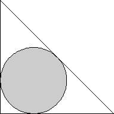 | 2. 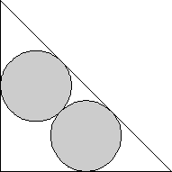 | 3.
| ||
| s = 2 + √2 = 3.414+ Trivial. | s = 2 + 2√2 = 4.828+ Proved by Yinfeng Xu in 1996. | s = 4 + √2 = 5.414+ Proved by Yinfeng Xu in 1996. |
| 4. 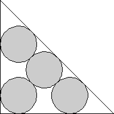 | 5. 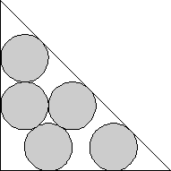 | 6. 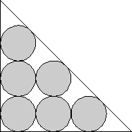 | ||
| s = 2 + 3√2 = 6.242+ Proved by Yinfeng Xu in 1996. | s = 4 + √2 + √3 = 7.146+ Proved by Hans Melissen in 1997. | s = 6 + √2 = 7.414+ Proved by Hans Melissen in 1997. |
| 7. 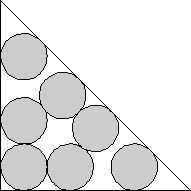 | 8. 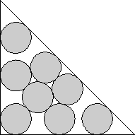 | 9. 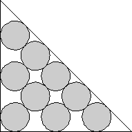 | ||
| s = 8.181+ Proved by Yinfeng Xu in 1996. | s = 2 + 3√2 + √6 = 8.692+ Found by Hans Melissen in 1997. | s = 2 + 5√2 = 9.071+ Trivial. |
10.
| 11. 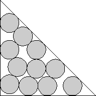 | 12. 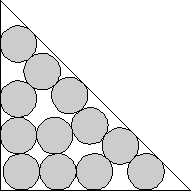 | ||
| s = 8 + √2 = 9.414+ Trivial. | s = 5 + √(2/3) + 3√2 = 10.059+ Found by David W. Cantrell in June 2005. | s = 10.422+ Found by David W. Cantrell in June 2005. |
| 13. 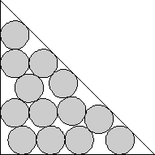 | 14. 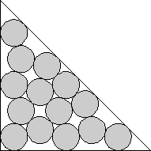 | 15. 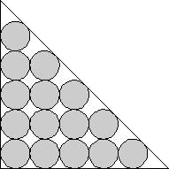 | ||
| s = 10.798+ Found by Hans Melissen in 1997. | s = 2 + 3√2 + 2√6 = 11.141+ Found by Erich Friedman in April 2005. | s = 10 + √2 = 11.414+ Trivial. |
| 16. 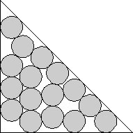 | 17. 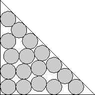 | 18. 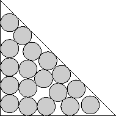 | ||
| s = 11.892+ Found by David W. Cantrell in January 2006. | s = 12.155+ Found by David W. Cantrell in January 2006. | s = 12.542+ Found by Eckard Specht in April 2009. |
| 19. 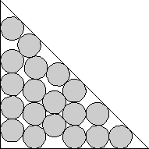 | 20. 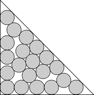 | 21. 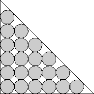 | ||
| s = 12.798+ Found by David W. Cantrell in January 2006. | s = 13.092+ Found by Maurizio Morandi in December 2008. | s = 12 + √2 = 13.414+ Trivial. |